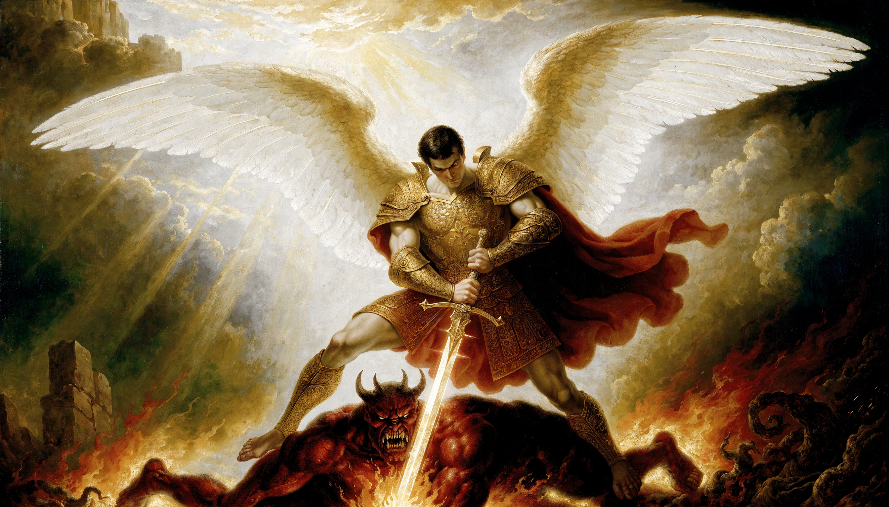

O Bem
E desceu dos altos céus o Guardião; abriu as asas sobre o mundo e ergueu a lâmina — e o abismo recuou diante de seu nome.
Livro I — E a lâmina foi dada a quem não temesse a noite
No princípio era a Luz — e a Treva jurou apagá-la.
E desceu dos altos céus o Guardião; abriu as asas sobre o mundo e ergueu a lâmina — e o abismo recuou diante de seu nome.
Mas das cinzas do orgulho ergueu-se o Caído, com fogo nas fendas da carne, jurando apagar toda aurora que ousasse nascer.
Então o céu se partiu ao meio. Duas forças, uma só lâmina — e onde o aço beijou o aço, decidiu-se a sorte de tudo quanto respira.
Gênesis · 01 — O Verbo
Não moldamos imagens. Moldamos aquilo que os olhos hão de lembrar quando toda luz se apagar.

O Testemunho — aquilo que ficou escrito
Almas forjadas em edição limitada
Olhos que testemunharam a luz
Batalhas travadas desde a primeira aurora
O Juramento — e a ti, a quem servirás?
Teu juramento reescreve o mundo.
O Chamado · 05